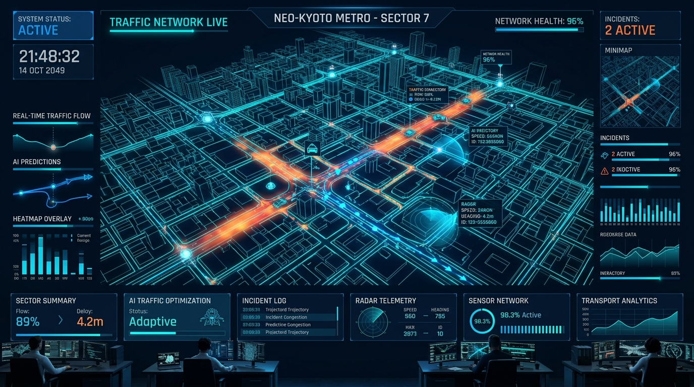

Smart Traffic Violation Pattern Detector
Distributed telemetry processing with Apache PySpark & Pandas, unsupervised KMeans spatial clustering, and automated statistical Z-Score anomaly detection for precision traffic safety enforcement.
1,500+
Ingested Violations
5 Clusters
ML Spatial Epicenters
16:00
Peak Surge Rush Hour

End-to-End Computational Pipeline
Combining big-data distributed processing with machine learning clustering and automated statistical outlier alerts.
Dual-Engine ETL Processing
Fault-tolerant streaming and batch aggregation capable of running via Apache Spark (PySpark) on cluster nodes or accelerated local Pandas engine with Parquet serialization.
KMeans Geospatial Clustering
Unsupervised spatial machine learning automatically grouping infraction coordinates into $k=5$ density centroids with dominant violation classification.
Z-Score Surge Anomaly Detection
Mathematical standard deviation testing ($Z \ge 1.5$) continuously detects abnormal violation surges during peak rush hours for municipal patrol deployment.
Weighted Risk Scoring Model
Multi-factor severity indexing assigning proportional risk points based on infraction lethality (DUI: 10, Reckless: 8, Red Light: 7, Speeding: 6, Seatbelt: 2).
Traffic Control Center
Real-time telemetry indicators, temporal distribution curves, and multi-factor infraction metrics.
⏰ 24-Hour Violation Curve & Spike Anomaly
Hourly volume distribution with statistical spike flags ($Z \ge 1.5$)
📅 Day of Week Volume Distribution
Weekly trend across weekday rush hours and weekend patrol periods
📊 Infractions by Severity Weight
Categorical volume proportional to municipal danger penalty
📈 Weighted Risk Index vs Violation Density
Risk points calculated from severity weights $\times$ incident frequencies
Machine Learning KMeans Hotspot Map
Interactive spatial mapping of 5 unsupervised KMeans clusters and individual incident points across the urban grid.
High-Risk Corridors & Hourly Anomaly Audit
Ranked coordinate hot corridors and statistical Z-Score audit trail across the entire 24-hour cycle.
📍 Top 10 High-Frequency Violation Corridors
Ranked coordinate intersections requiring focused patrol presence
| Rank | Corridor Coordinates | Total Incidents | Density Share | Action |
|---|
📈 24-Hour Statistical Surge Audit Log
Calculated Z-Scores, anomaly classifications, and patrol recommendations
| Hour | Violations | Risk Score | Z-Score | Status | Primary Infraction | Action Recommendation |
|---|
Integrated REST API Console
Real-time machine-readable JSON endpoints for dispatch automation, external traffic HUDs, and civic integrations.
// Click "Send Request" to fetch live JSON telemetry...